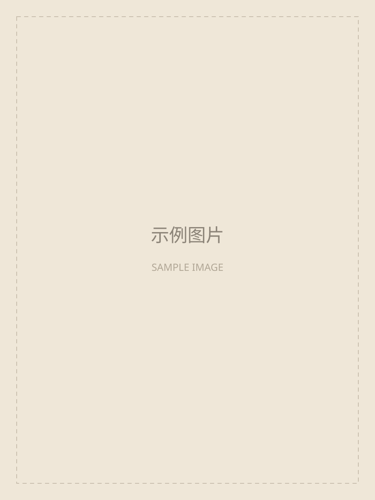

封面「投胎模版」+ 红毯照带来点击，却把「看豪门」的人带到了「买被子」的货架前。

这条笔记用「投胎模版」式的豪门窥私做钩子，前 100 秒讲名人，最后 19 秒卖被子。 它拿到了账号中上水平的流量，却没有把流量交给品牌：评论区 13 条里 8 条在聊贫富，只有 2 条提到产品。
钩子（名人 + 极端细节）是有效的，但封面承诺（豪门想象）与产品承诺（一床被子）错位；产品 71% 处才出现，评论区已被阶层情绪接管，转化路径缺失。
147 秒分六段：钩子 4%｜名人事实 28%｜爱情线 12%｜转折 21%｜产品 23%｜收尾 12%。产品在 1:31 才以画面出现，1:44 才被口播点名。
| 时间 | 段落 | 做了什么 |
|---|---|---|
| 0:00–0:05 | 钩子 | 「最夸张的豪门带娃现场？答案是私人飞机」 |
| 0:05–0:22 | 事实堆叠 | 私人飞机换尿布、红沙发喂奶、示例集团大公子、继母 示例人物 |
| 0:22–0:44 | 家世背书 | 奥斯卡导演父亲、Dior 实习、名媛舞会、宫廷公寓 |
| 0:44–1:01 | 爱情线 | 情人节公开 → 订婚 → 结婚生子 →「最好的朋友」 |
| 1:01–1:31 | 转折 | 没有舞会与闪光灯，只有花园和婴儿；再贵的生活也要关灯躺下 |
| 1:31–2:03 | 产品 | 示例品牌净绒被：46 道工序、95% 鹅绒、120 支、32 年、4000+ 酒店 |
| 2:03–2:21 | 收尾 | 「豪宅是给别人看的风景，被窝才是自己的生活」；关注我 |
前 70% 没有给产品留任何线索（没有枕头、没有卧室、没有「睡」字），产品段的信任是借来的，不是攒来的——观众没有理由在 1:31 突然关心一床被子。
「再华丽的宫殿也不可能每一刻都在举办舞会，再昂贵的生活也有卸下礼服关掉灯躺下睡觉的时候。」
「我们总会关注它够不够蓬松，却很少去想和皮肤贴着这么久的东西究竟是怎么被清洁出来的。」
前段是「别人的生活」（红毯、宫廷、名人），后段是「我的卧室」（白墙、宜家床品）。色温从暖金切到冷白，观众在这一刻明确意识到「广告开始了」——这是完播率最可能掉头的点（推断，未取得后台留存曲线）。
13 条一级评论里，8 条在聊阶层与贫富，只有 2 条提到产品；最高赞不是种草，而是「这条视频就是告诉我们多惨」。
「这条视频就是告诉我们多惨，形成对比」
「没有媚富的义务」
「这叫门当户对产生了爱情罢了」
「被被子种草了，直接搜示例品牌净绒被吗」
共识：这是一场「阶层对比」，不是「生活美学」。分歧：爱情还是门当户对。缺口：几乎没人讨论产品本身，品牌没有进入议题。
它拿到了 3.2× 中位 的流量，但没成为账号爆款（第 7/22）。起量与失效，是两套不同的原因。
身份反差 + 窥私欲，「23 岁 / 太子 / 生娃像拍电影」把点击理由压缩到 3 行。
「私人飞机上换尿布」比「豪门生活」具体一百倍，是可复述、可转述的社交货币。
出生 → 家世 → 爱情 → 日常，四段都有信息增量，不靠空镜拖时长。
30+ 女性成长、生活美学，15,660 粉的基本盘本就消费「别人的生活」。
封面吸引「看豪门」的人，产品要「买被子」的人；前者贡献点击，后者才贡献转化。
8/13 条在聊贫富，最高赞 274 是「告诉我们多惨」，品牌信息被淹没。
1:31 才进产品，宫廷红毯切普通卧室，观众认知从「看故事」切到「看广告」。
19 秒念完 46 道工序 / 95% 鹅绒 / 120 支 / 32 年 / 4000 家酒店，无按压、无水洗对比。
结尾是「关注我」，不是搜索词或商品组件；「直接搜吗」的评论就是证据。
19 条评论、0.74% 评论率，缺少二次扩散燃料。
若把「被子不干净 / 不暖」前置到 0–10 秒，再讲「4000 家酒店同款」，产品记忆会强得多。
粉丝基数、发布时段、视频长度都不是原因——账号 29,873 赞的《完美母亲》同样长视频、同一时段。
可复用度 76 / 100：结构强、素材门槛高（名人素材有版权风险）、人设依赖中等、时效中等。要流量和要带货，是两套改法。
| 方案 | 目标 | 怎么改 |
|---|---|---|
| A | 只要流量 | 保留「极端钩子 → 名人事实 → 反差 → 金句」，换名人/换场景；但不要接人群不匹配的商单——本条就是反例。 |
| B | 要带货（推荐） | 产品前置：0–3s 痛点 → 3–15s 反常识（酒店看的是「干净」不是「蓬松」）→ 15–35s 名人插叙 → 35–95s 演示 → 95–120s 参数价格 → CTA。 |
| C | 人设最稳 | 「30+ 女性的睡眠投资」：讲自己的卧室与换季，不讲豪门，弱化「投胎」叙事。 |
1. 4000 家高端酒店的同款被窝，到底贵在哪
2. 被子越蓬松越好？你可能一直买错了
3. 一晚贴 8 小时的被子，比护肤品更值得挑
4. 示例集团太子妃的豪门带娃，夸张的不是私人飞机
5. 豪门也逃不过的那件事，被这条视频拍明白了
6. 为什么高端酒店的白被子，盖起来不一样
7. 豪宅是给别人看的，被窝才是自己的
8. 别再只看克重了，羽绒被的干净程度才是关键
| 指标 | 判定线 | 说明 |
|---|---|---|
| 完播率 | > 35% | 147s 长视频的及格线 |
| 商品点击率 | > 2% | 带货版必须看，本条缺失 |
| 评论产品提及率 | > 20% | 本条仅 15%，且是疑问句 |
| 收藏 / 赞 | > 0.2 | 本条 0.184，接近及格 |
| 搜索词增长 | 有 | 「示例品牌净绒被」是否起量 |
名人红毯与街拍素材（含第三方水印）有肖像权与著作权风险；婴儿镜头涉及未成年人隐私；「投胎模版」叙事易引发仇富与举报；商单需平台报备，参数类表述需有依据。
| 项 | 内容 |
|---|---|
| 笔记 | 《示例标题：一条关于生活方式的视频》· 林小满 · 2026-10-20 发布 |
| 形式 | 竖屏视频，147 秒，中文口播 + 中英文字幕 |
| 样本 | 13 条一级评论（全部）+ 5 条回复；封面与 3 张关键画面 |
| 口径 | 点赞 / 收藏 / 评论 / 转发；账号基线取近 22 篇笔记 |
| 局限 | 字幕为视频音频识别生成，可能存在个别错字，请以画面文字为准。 |
| 原话 | 赞 | 回复 |
|---|---|---|
| 这条视频就是告诉我们多惨，形成对比 | 274 | 3 |
| 没有媚富的义务 | 138 | 0 |
| 这叫门当户对产生了爱情罢了 | 77 | 0 |
| 外国人有钱，我就老是觉得他们都是吸着我们先辈祖先们的血发的家 | 53 | 1 |
| 被被子种草了，直接搜示例品牌净绒被吗 | 2 | 1 |
免责声明 本报告所有内容均来自公开信息（笔记正文、公开评论、公开字幕与公开页面），仅用于内容分析与研究参考，不构成任何商业、消费或投资建议；引用观点不代表本报告立场。数据与平台规则可能随时变化，请以官方最新信息为准。